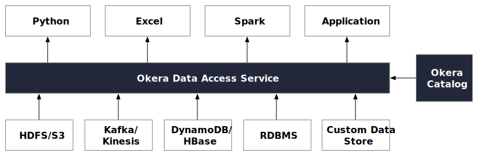
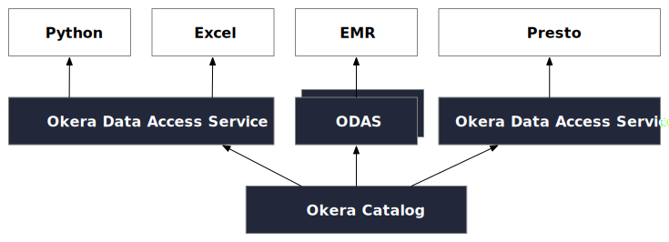

ODAS Overview
Okera Data Access Service (ODAS) is a scalable, fault-tolerant distributed service for analytics tools to interact with. ODAS performs the I/O and provisions data to third-party tools after applying schema, fine-grained security, and other transformations (user-defined functions, tokenization, masking, and so forth). The data is provisioned in the form of familiar abstractions, either tables or files in formats the user may request. Different analytics tools like Spark, Python, SQL engines, BI tools, Excel etc interact with this service.
APIs
There are three ways to interface with data over ODAS: Java API, Python API, and REST API.
Java API
See Extending ODAS
Python API
PyCerebro is the native Python library for clients interacting with ODAS. It is similar to the Java libraries and calls the lower level ODAS services. The library directly interacts with the planner and worker services. There are alternate ways it can interact with ODAS from Python. In particular, it can interact by way of the REST API. This library can provide more overall control and better performance. For simple applications, the REST API may be sufficient. We recommend this native library for reading larger volumes of data.
See the PyCerebro documentation for more.
REST API
Services
ODAS is made up of sub-services.
Planners
Workers
Web UI
Deployment Manager
This is the deployment administration service, responsible for managing all other ODAS components in your enterprise. It provides capabilities to spin up and down other services and monitor their status.
Architectural Options
an Okera installation can include multiple instances of ODAS running within your data environment. Some may be ephemeral, while others may be persistent. Some may be running as independent services whereas others may be co-located with the analytics framework. The deployment model depends on the performance and isolation requirements.
First let’s look at a simple ODAS arrangement, with all data and tooling running through a consolidated instance of the access service.

Next we see a layout with multiple ODAS instances running, governed by a single Okera Catalog service.
